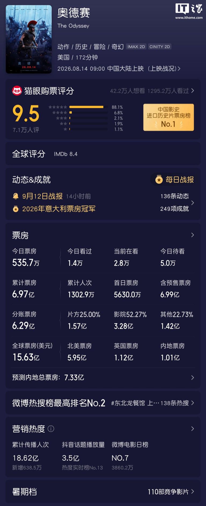

IT之家 9 月 13 日消息，环球影业今日宣布，诺兰新片《奥德赛》登顶环球影业影史全球票房冠军。
IT之家查询获悉，本片全球票房已突破 15.63 亿美元（IT之家注：现汇率约合 105.2 亿元人民币）， 拿下 2026 年意大利、法国票房冠军，同时也拿下了中国影史进口历史片票房冠军。

根据规划，本片改编自荷马史诗，讲述特洛伊战争后奥德修斯回乡的漫长旅程，将于 11 月 17 日上线数字版，同步登陆点播平台并发行 4K 超高清 / 蓝光版本。 另外，该片演员阵容强大，由马特 · 达蒙饰演奥德修斯，汤姆 · 霍兰德、安妮 · 海瑟薇、赞达亚、罗伯特 · 帕丁森、露皮塔 · 尼永奥、查理兹 · 塞隆、乔 · 博恩瑟、希米什 · 帕特尔、艾略特 · 佩吉、萨曼莎 · 莫顿等出演。 据悉，《奥德赛》还全程采用 IMAX 胶片摄影机拍摄，是全球首部全程使用 IMAX 胶片拍摄的电影。